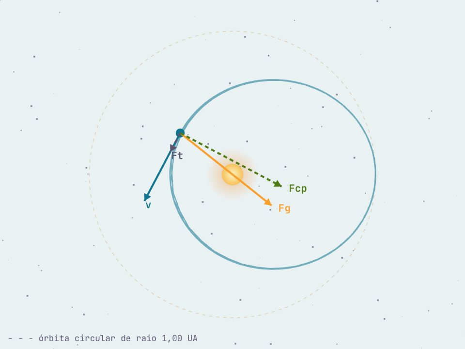

Gravitação universal · F = G·M·m / d²
Da maçã à Lua. Da pergunta à universidade.
Entender um princípio é reconhecê-lo em toda parte: na queda de uma maçã, na órbita da Lua, numa questão de vestibular. Aqui você vê os fenômenos acontecerem em simulações, compreende a teoria e as fórmulas e treina para o ENEM, a FUVEST e outros vestibulares.
01 · Explore a Física
Seis territórios, um só conjunto de leis.
Cada área tem fórmulas explicadas na biblioteca e experimentos no laboratório.
- 01
Mecânica F
Movimento, forças, energia e gravitação.
- 02
Termologia Q
Calor, gases e máquinas térmicas.
- 03
Ondulatória λ
Oscilações, som e efeito Doppler.
- 04
Óptica n
Reflexão, refração, espelhos e lentes.
- 05
Eletricidade i
Cargas, circuitos e eletromagnetismo.
- 06
Física moderna h
Relatividade, fótons e o núcleo atômico.
02 · Experimente
A Física se descobre mexendo.
São 23 experimentos interativos. Mude um valor e veja a natureza responder.

Mecânica celeste · simulação realGravitação
Lance um planeta e veja a órbita se desenhar.
Escolha a distância ao Sol e a velocidade de lançamento. Abaixo da velocidade circular, a órbita vira elipse; a partir de √2 vezes, o planeta escapa e não volta mais.
Outras bancadasLançamento oblíquoEfeito DopplerMotor OttoEfeito fotoelétricoEfeito estufaTodos os experimentos →
03 · Aprenda e pratique
Estudar, praticar, conferir.
Consulte, resolva e confira com explicação em cada passo.
- Biblioteca de fórmulas→247 fórmulas, cada uma com exemplo resolvido
- Simulado ENEM→Dez questões dos temas que mais caem
- Leis de Newton→Lição com exercício resolvido e pêndulo
- FUVEST 2027 resolvida→As dez questões de Física comentadas
- Gráficos e áreas→O que a área sob cada curva significa
- Quiz rápido→Oito perguntas com a explicação na hora
- Vetores→Soma, subtração e decomposição no plano
- Quiz de eletricidade→Resistência equivalente, corrente e ddp
- Constantes→Os valores que caem na prova
- A Jornada até Einstein→Jogo de tabuleiro com questões de Física
Toda boa pergunta sobre o mundo começa assim: por que isso se move desse jeito?
Comece pelo laboratório →